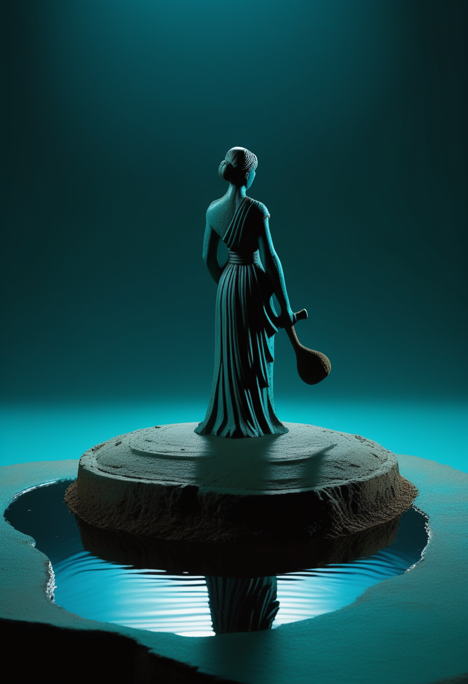

WHOは薬剤耐性(AMR)がこのままなら今後25年で世界で3900万人の命を奪うと警告した。対策計画を持つ国は79から173に増えたが、実行できているのはまだ少数派だ。足もとではBCIの会議が北京で開き、ハッブル望遠鏡の行く末を米国が産業界に問い、望遠鏡の『デジタルツイン』が隠れた系外惑星を暴き出した。遠い過去からは、巫女の埴輪と元寇の沈没船、400年閉じたままの錠が姿を見せた。
WHOは11月16〜17日、抗菌薬が効かなくなる薬剤耐性(AMR)について、2021年には直接の死因として100万人超が死亡し、現在の傾向が続けば今後25年で世界で3900万人が死亡するとの見通しを示した。183か国を対象にした調査では、AMR対策の国家行動計画を持つ国は2017年の79か国から173か国へ大きく増えたが、資金と実施体制の両方が整っている国はわずか42か国にとどまる。計画を『作る』段階から『実行する』段階への移行が進んでいないことが、今回の警告の核心にある。基盤となる統計は、血流感染・尿路感染・消化管感染・淋菌感染など2300万件超の確定検査結果を集めた2025年10月のWHO世界サーベイランス報告書に基づく。
Scholar Rockは11月10日の第3四半期決算発表で、SMA治療薬アピテグロマブ(米国商品名ISEMBYLD、9月11日FDA承認・現行は点滴静注のみ)について、皮下注射版の規制当局との協議が前進していると明らかにした。同時に、SMAとは別の神経筋疾患である顔面肩甲上腕型筋ジストロフィー(FSHD)を対象にした第2相試験『FORGE』でも参加者登録と投薬が進行中であることを報告した。FSHDは筋力低下が顔・肩・上腕に強く出る遺伝性疾患で、SMAとは原因遺伝子も病態も異なるが、同じ抗ミオスタチン機序の薬が試されている。欧州ではCHMP意見が2027年前半、日本では優先審査での申請受理が既に進んでいる。
ゾルゲンスマ(onasemnogene abeparvovec、1回約2.13億円)は高額なため低中所得国では入手が極めて難しい。これに代わる低中所得国向けのAAV遺伝子治療『vesemnogene lantuparvovec』の治験では、2026年3月時点のデータカットで、生後24か月未満の患者16人中15人が投与後12か月以上の追跡を完了したことが2026年の中間報告で示された。対象が小さく査読論文としての確定評価はまだだが、同種治療の長期安全性・有効性を低中所得国の実情に合わせて確認しようとする試みとして位置づけられている。既存の人道的無償提供プログラムが対象国を縮小する中、価格そのものを下げる方向の取り組みとして注目される。
SMA領域の話題は薬そのものの効き目だけでなく、『誰に届くか』という軸に移ってきている。別の病気への展開と、低中所得国への価格面での接近は、同じ薬の射程をそれぞれ違う方向に広げている。
北京市昌平区で11月19日に開幕した『2026中国脳機接口大会』が本日22日まで開かれている。メインフォーラムでは『脳機接口イノベーション発展研究報告(2026)』が発表される予定で、企業単位の治験・資金調達の話題とは別に、国レベルでの産業育成・標準化の動きが続いていることを示す。上海でも12月4〜6日に別の『蒲江イノベーションフォーラム2026脳機接口大会』が予定されており、北京・上海の両都市が脳機接口(BCI)の完全な価値連鎖の誘致を競っている構図が浮かぶ。
Neuralinkは11月20日、X(旧ツイッター)に約2分の動画を公開した。臨床試験参加者がN1インプラントのみを使い、コントローラーなしで『GTA VI』内の高速艇を操縦する様子を映したもので、思考だけで旋回・加速・視点変更を同時にこなしている。会社は投稿に『装置は研究段階で、FDA等の承認は得ていない』という定型の注意書きを添えている。査読を経たデータや独立機関による検証はまだなく、企業の宣伝用デモである点は踏まえておく必要があるが、複数の操作軸を同時に制御できる能力を示した点では、これまでの単純なカーソル操作のデモから一歩進んでいる。
国家レベルの報告書づくりと、一企業のゲーム内デモ。規模も性質も違う2つの動きが、同じ週のBCI業界で同時に進んでいる。
WHOは抗菌薬が効かなくなる薬剤耐性(AMR)について、2021年の直接死因が100万人超、現在の傾向が続けば今後25年で世界3900万人が死亡するとの見通しを示した。183か国調査では対策計画を持つ国が79から173に増えたが、資金と実施体制が整うのは42か国のみ。詳しくは本号の今日の一本を参照。
米州機構(PAHO)は11月18日、米大陸全体で『最後の手段』とされる抗菌薬への耐性が強まっていると警告した。地域の監視網データによると、肺炎桿菌(Klebsiella pneumoniae)の耐性率は2015年の約15%から2024年には約26%まで上昇している。WHOが同じ週に出した世界全体への警告(3900万人死亡見通し)と重なる内容で、個々の病院・国だけの問題ではなく大陸規模で進む傾向であることを裏づけている。
個別の流行の数字を追う週が続いた後に、薬そのものが効かなくなっていくという、もっと根の深い警告が重なった。対策計画はできても、実行はまだ追いついていない。
NASAは10月29日、ハッブル望遠鏡の今後について産業界から情報を募るRFI(情報提供依頼)を出し、回答期限は11月30日午後3時(米東部時間)。問いは3択で、軌道を約600kmまで引き上げる『再ブースト』、軌道上での保守・延命サービス、そして安全な制御落下による処分。あくまで市場調査段階で、NASAは特定企業の選定や予算の確約はしていない。2032年までに何らかの対応が必要との見立てだが、天文学者の分析では落下はもっと早まる可能性も指摘されている。NASAは2022年にも同種の提案を募り8件の回答を得たが、2024年には再ブーストを見送る判断をしていた経緯があり、今回は改めてその判断を問い直す形になる。
ノースウェスタン大学のロドリゴ・フェラー=チャベス氏らの研究チームが、望遠鏡の光学系そのものを仮想的に再現する『デジタルツイン』を使い、恒星の光を物理モデルに基づいて取り除く新手法『FLIP』をNature誌11月4日号に発表した。AIで惑星そのものを探すのではなく、望遠鏡の既知の物理特性と最適化計算を組み合わせている点が特徴。既存のジェイムズ・ウェッブ宇宙望遠鏡(JWST)のデータに適用したところ、感度が最大15倍向上し、これまで埋もれていた巨大系外惑星を新たに検出できた。研究チームは、この手法がナンシー・グレース・ローマン宇宙望遠鏡や将来の『ハビタブル・ワールズ・オブザーバトリー』にも応用でき、極端な安定性要求を緩和できる可能性があるとしている。
老いた望遠鏡の行く末を人間が思案する一方で、別の望遠鏡は自分自身の『分身』を作ることで、隠れていたものを見つける力を手に入れた。

群馬県の西下宮(にししたのみや)遺跡で、5世紀後半の古墳の周囲を囲む溝から、頭部と胴体が残る埴輪が出土した。髪型・赤い帯・粘土製の腕輪・棒状の持ち物といった特徴から、巫女(みこ)を表した人物埴輪とみられている。現存部分は約40cmで、遺跡には全長45〜49m前後の主丘を含め約11基の古墳が集まる。埴輪はもともと古墳の突出部に立てられ、その後周溝に転落したと考えられている。群馬県立埋蔵文化財調査センターで保管・展示される予定。
國學院大學の池田榮史教授が長崎県松浦市と進める調査で、高島沖の海底から13世紀の沈没船が新たに見つかった。2011年・2015年の発見に続く3隻目で、1281年の弘安の役(元寇)で沈んだ船とみられている。船体からは賽(さい)5個と、小型の遊戯札『小牌(こはい)』29枚が回収された。池田教授は、これらは乗組員の娯楽に使われたとみている。この船が侵攻軍の『母船』だった可能性を指摘する報道もあり、さらなる発掘は2027年に予定されている。
英国ウェールズ国立博物館とカーディフ大学の研究チームは、1583年12月28日にスペインからの帰路で沈んだ商船『アン・フランシス』号の真鍮製ダイヤル錠について、骨の撮影に使う微細CTスキャンで内部機構を調べ、無理に壊すことなく4文字の暗号『ANCE』を特定した。この錠は1996〜2017年にかけて金属探知家ヒューズ氏が発見した遺物の一つ。汚れを取り除いたのち、ダイヤルは400年以上ぶりにカチリと開いた。錠が何を守っていたのか、この単語に特別な意味があったのかは今も分かっていない。錠は現在、スウォンジーの国立海事博物館での企画展『Tides of Treasure』で展示されている。
巫女の埴輪、元寇の船上の遊び、400年閉じていた錠。いずれも名もなき誰かの日常や意志が、思いがけない形で今に残っていた。
今号の軸は『積み重なってきたものが、一気に姿を見せる』だった。薬剤耐性は一つの流行ではなく、静かに進む構造的な警告としてWHOから示され、ハッブル望遠鏡は老いの果てにどう終えるかを問われ、別の望遠鏡は自分の分身を作ることで隠れた惑星を見つけた。BCIは国家の報告書と一企業のゲーム内デモという、まったく違う規模の動きを同じ週に見せている。群馬の巫女、元寇の船上の遊び、400年閉じていた錠は、どれも遠い時代の誰かの生きた跡を静かに今へ差し出していた。
おやすみなさい、また明日。